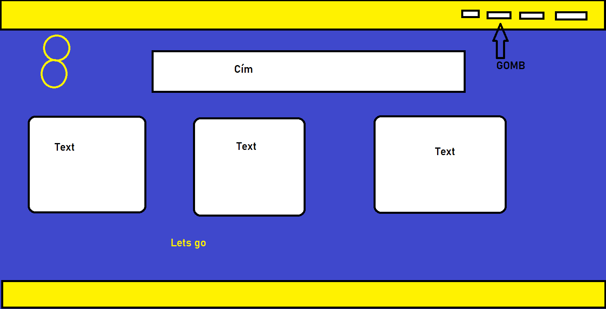
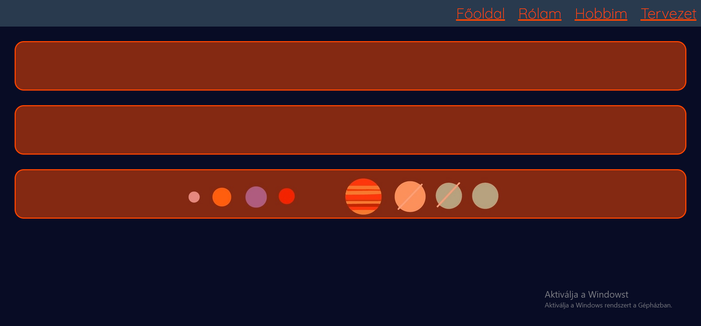

A terv egy minél egyszerűbb, letisztultabb oldal kialakítása volt. Természetesen a szín, elrendezés stb. változtak a portfólió készítése során.
Miután sikerült megtalálni a megfelelő hátteret, próbáltam valami hozzáillő színt keresni, majd mindent ilyen "buborékokba" rendezni több-kevesebb sikerrel. A nehézséget leginkább ezeknek az elhelyezése jelentette.